Tarta de chocolate y nata
Volver al menú🔙
Ingredientes
Para el bizcocho:
- 250 g de azúcar
- 6 huevos
- 200 g de aceite de girasol
- 70 g de agua
- 300 g de harina de repostería
- 90 g de cacao amargo en polvo
- 1 sobre y medio de levadura (unos 25 g)
Para el almibar:
- 130 g de azúcar
- 100 g de agua
- El zumo de 1/2 limón
Para rellenar:
- Mermelada de fresa
- 500 g de nata para montar
Para decorar:
- Cacao en polvo
- Pepitas de chocolate
Preparacion de la tarta 🍽
- Encendemos el horno a 180º.
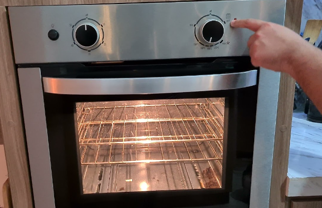
- Colocamos la mariposa en las cuchillas. Ponemos en el vaso el azúcar y los huevos. Programamos 10 minutos, 37º, velocidad 3.
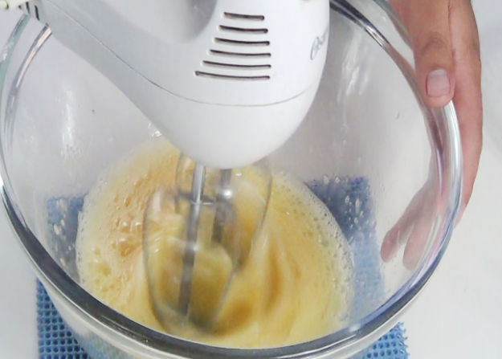
- Aprovechamos esos minutos para poner en un bol la harina, el cacao y la levadura. Mezclamos con la espátula. Engrasamos con mantequilla en un molde rectangular, de 24 x 32 cm aproximadamente.
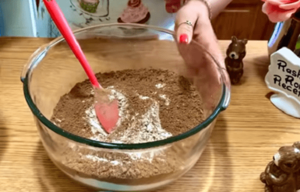
- Pasados esos 10 minutos ponemos de nuevo la cuchillas en movimiento, otra vez en velocidad 3, pero sin programar tiempo ni temperatura. Incorporamos por el bocal el aceite y el agua. Todavía en esta velocidad vamos introduciendo,
a cucharadas, la mezcla anterior (harina, cacao y levadura). Continuamos mezclando 1 minuto, velocidad 3.
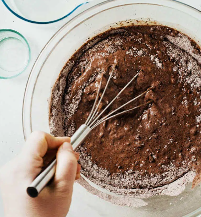
- Quitamos la mariposa y ponemos la mezcla en el molde.
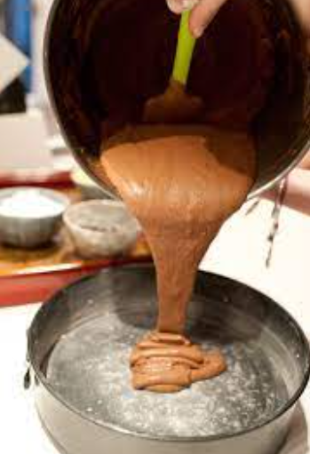
- Horneamos a 180º durante 25 minutos aproximadamente.
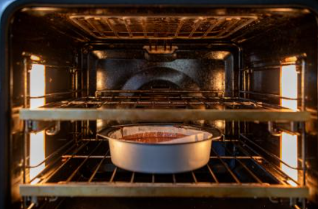
- Cuando esté horneado lo desmoldamos y dejamos enfriar.
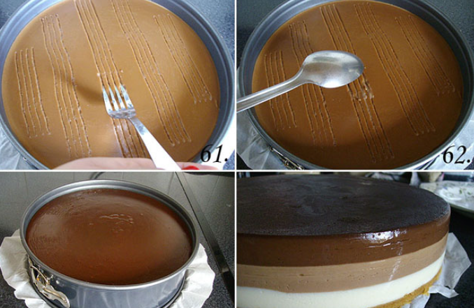
- Preparamos la nata. Ponemos la mariposa en las cuchillas y la nata de montar, bien fría, en el vaso. La montamos en velocidad 3 1/2. No programamos tiempo, tenemos que estar pendientes y, una vez montada, parar la máquina para que no se
nos corte. Reservamos en la nevera.
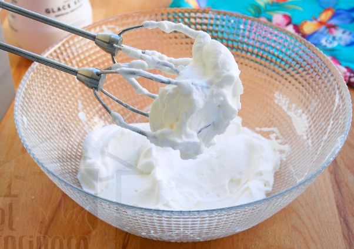
- Lavamos el vaso y hacemos el almíbar poniendo en el vaso el azúcar, el agua y el zumo de limón. Programamos 7 minutos, 100º, velocidad 2 . Retiramos y dejamos enfriar.
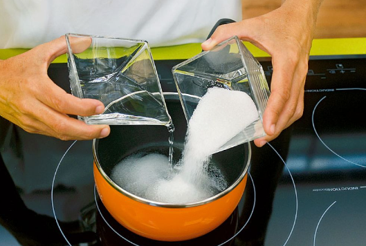
- Cuando el bizcocho esté frío será el momento de montar la tarta. Dividimos en dos el bizcocho. Ponemos el almíbar en ambas partes. Extendemos mermelada en el bizcocho que será la base y, sobre ella, la nata. Cubrimos con la otra mitad del bizcocho.
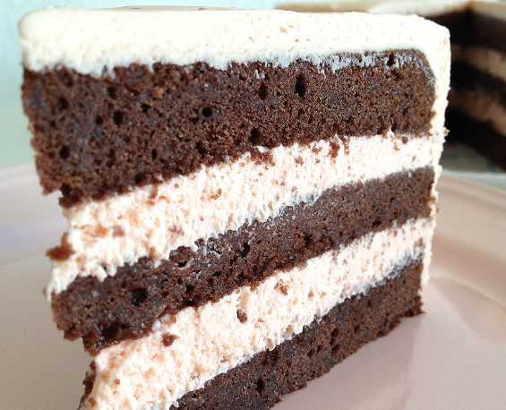
- Dejamos la tarta en la nevera durante unas horas. La decoramos con cacao en polvo y pepitas de chocolate. La servimos troceándola en cuadrados.
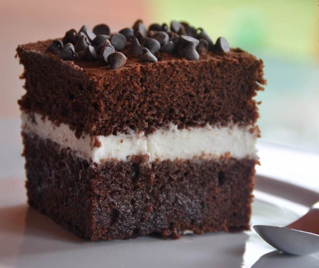